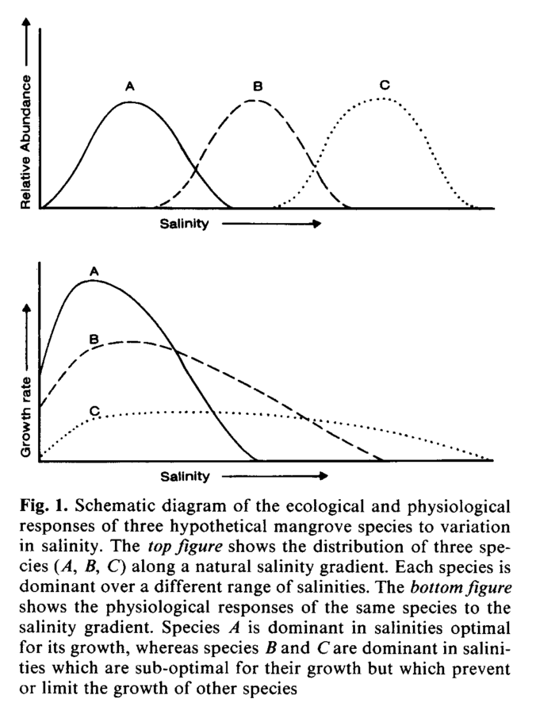
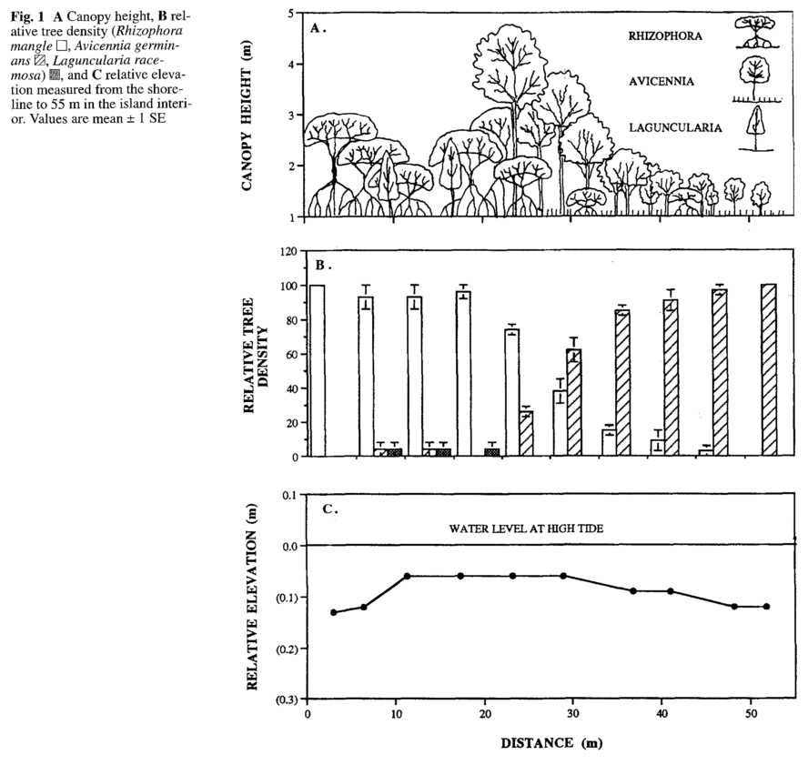

3.2 Ecophysiology & establishment
3.2.1 Chapman, 1976, Ch. 8
“Ch. 8 - Ecological factors” (Chapman 1976a)
Key contribution: This is a somewhat dated review of ecological factors that are influential on mangrove vegetation. There are more recent reviews that should be referred to, but this chapter provides a nice overview of some of the earlier work related to mangrove vegetation and ecological factors.
Key notes:
Inundation - The effects of salinity versus frequency and duration of inundation likely influences seedlings versus mature trees differentially. Inundation “classes” were originally proposed by Watson (and others), but likely have little practical value now. Number of days of lack of inundation is understood (by Chapman) to be the most important component of “inundation” more broadly. There is a seasonal component that is important to consider (i.e., areas that have no tidal inundation and no rainfall may be more hypersaline and hostile to establishment).
Salinity - Chapman notes that there are correlations between salinity and presence of vegetation, but the relationships may be overstated.
Soil composition - The texture of soils is extremely important as it relates to drainage and also aeration of the soil. The presence of sand within the soil can be extremely important; often have complete lack of oxygen within 5 cm soil depth (along channels as well). Presence of peat or other organic layers can greatly influence gas and water infiltration. The dark color of soils is related to iron sulfide production by anaerobic bacteria.
Water table and drainage - The mean level of the water table has been found at some sites to increase as you move towards the shoreward section of the forest. There is very little movement with seasonal changes in tide (i.e., spring vs. neap tides), which may be related to the texture of the soil present. Some carbonate settings have extremely coarse substrates (majority of sand > 2 mm).
non NaCl soil chemistry - CEC is generally higher in the surface levels of the soil.
Biota: Chapman provides 6 habitats in which biota exist, as an extension of MacNae. They most significant habitat for my particular research purposes are the ecosystem engineers, which would consist of the crustaceans that inhabit the canopies, the soil surface, and the soil itself.
Further reading: Need to look up sulfur reduction processes.
3.2.2 Chapman, 1976, Ch. 9
“Ch. 9 - Physiology of mangroves” (Chapman 1976b)
Physiology - Functioning
Key contribution: This chapter provides a nice overview of the physiology of mangroves, primarily in relation to:
- Physiology of viviparous seedlings
- Physiology of the pneumatophores
- Physiology of salt control
- Osmotic pressures
- Transpiration rates
- Carbon assimilation rates
Viviparous seedlings - The salinity of seedlings has been shown to be much lower than that of parent trees. This might increase buoyancy of the propagule and also protect it against very hostile environments. Seedlings quickly take up salts upon establishment, rapidly reaching to osmotic potentials of parent trees.
Additionally, seedlings are found to be able to respire anaerobically. Respiration may be inhibited by several factors, such as presence of a fruit wall (A. marina) or the uptake of large concentrations of salts (R. mucronata).
Pneumatophores - A number of studies have shown that pneumatophores are largely plant systems responsible for exchanges of gases. The discussion of pneumatophores here focused on three primary points:
- Gaseous exchange - Much of this is conducted through the lenticels, which may also occur on stilt roots. The individual pneumatophores are seen as being responsible for aerating the particular section of cable root it exists upon, as well as any stabilizing roots underneath.
- Respiratory function - Respiratory activity of pneumatophores likely makes up a significant (1/8 to 1/2) of total respiration.
- Other purposes - Pneumatophores may server other purposes besides gas exchange or respiration. For example:
- Sonneratia and Avicennia pneumatophores produce very fine roots near the surface of the soil which aid in absorbing nutrients. As sediment accretes, the lower rootlets cease functioning and new sets closer to the surface are produced. Older pneumatophores may exist primarily as support organs for the absorbing rootlets
- This is interesting in reference to carbon, soil accretion and biological contribution; it would be good to look into morphological differences of roots in mangroves. A review article?
Salt control - Different strategies exist to deal with maintaining osmotic potentials and handling salts within mangroves.
- Salt exuding - Avicennia and Aegiceras spps. are able to exude salt from glands in leaves, which is an energy intensive process. These same species do not appear to exclude salt at the roots to the same degree that other species without salt secretion glands do.
- Exclusion at roots - Species without salt secretion glands maintain high osmotic potentials within their roots, which prevents much of the salt in the root system from entering the tree.
- Increasing leaf succulence - Differential rates of storage of water and salts in vacuoles and leaf tissues vary amongst species, as well as with tree age and also environmental salinity levels. The coupling of root exclusion and increasing leaf succulence may be primary mechanisms of handling salinity for non-secreting species.
Osmotic pressures - Osmotic pressure is the tendency for water to enter a solution through osmosis. High OPs indicate a higher ability to take in water via osmosis. Interestingly, the OP in excess of sea water (i.e., effective OP) in mangroves is comparable to OP values in terrestrial species. When considering OP in mangroves, need to think of three compartments:
- OP in roots - uptake of water
- OP in leaves - transpiration and thus loss of water
- OP in vascular stem - flow rates within the plant
For non salt-secreting species, the flow of water through the system is largely salt-free. OPs can vary within species depending on different salinity conditions, which might be reflected in succulence or other traits measurable by remotely sensed data (hyperspectral imagery).
Transpiration rates - The transpiration rates of mangroves are reduced in saline conditions, and are affected by other environmental factors such as soil texture (e.g., more rapid transpiration from plants in sand than mud), but also depends on species. Evidence has been shown that transpiration rates are higher for Avicennia in presence of salt.
Some researchers have considered mangroves as xerophytic systems (i.e., arid systems with lack of water), but others have attacked this in that mangroves receive continuous supply of water (though limited) and thus are not living in a water limited system. For non-mangrove species living in a mangrove ecosystem, xerophytic conditions are likely present.
Carbon assimilation - The information provided here is cursory and simply points to a lack of information. Marilyn Ball has done much more work on this topic, particularly in relation to PWUE, and her articles should be referred to here.
3.2.3 Ball, 1988
“Ecophysiology of mangroves” (Ball 1988)
Key significance: This is an excellent review of the ecophysiology (how the phyisology of the trees responds to their particular environment) of mangrove trees. This paper should be reviewed more than once.
One of the key concepts to emerge from this study is:
- Mangroves have largely evolved to have large tolerances to salinity and inundation given the very dynamic environments in which they exist. Rather than evolving to exist in narrow niches, competition may drive zonation and thus the existence of multiple species in moderate stress environments.
Key notes:
Waterlogging - Key fact is that oxygen diffuses through air 10,000 times more rapidly than through water, thus root systems of mangroves are adapted such that they avoid extensive inundation through areal roots.
- degree of soil saturation effects form and availability of different nutrients – how specifically does this happen?
- may have different amounts of availability of P and N along the tidal gradient
- N primarily exists as ammonia in frequently tidal regions, which binds easily to organic compounds and thus persists within the soil system
- N exists primarily as nitrate in less frequently flooded zones, which is more prone to leaching. Typically find that these zones are P limited rather than N limited, however, which is easily absorped onto clay or precipitated with Ca, Al, or Fe
Salinity - Important to remember that tolerance of salinity is largely dependent upon the developmental stage of the plant! The presence of cotyledonary reserves allow seedlings to persist in conditions that are otherwise inhospitable to them, but may not establish successfully following depletion of these reserves.
Mangroves frequently classified according to three different mechanisms of tolerance:
- salt exclusion - all mangroves exclude salt at the root tips
- salt accumulation - all mangroves accumulate ions (though they show preferential differences for different ions) to maintain osmoregulation
- salt excretion - selective species have ability to excrete salts
The particular salinity tolerance of a species may be particularly difficult to determine due to the species deriving water from sources other than surface water (i.e., freshwater underground seepage). Compartmentalization of ions is extremely important for maintaining biochemical processes, for example photosynthesis, especially for those species that are incapable of secreting salts.
The ratio of Na+ / K+ is important in chloroplasts (cell of the leaf responsible for photosynthesis). Deficiencies in K+ concentration have been shown to result in loss of photosynthetic capability, particularly for Avicennia species.
The major mechanism of ion transport into the transpiration system of the plant is through symplastic pathways (inside of plasma membrane where water and low-molecular-weight solutes can diffuse freely).
Species of some genera (Acanthus, Aegialitis, Aegiceras and Avicennia) are capable of secreting salt from leaves.
Photosynthesis - Most evidence points towards C3 photosynthetic pathways within mangrove species, however they exhibit very conservative water-use efficiencies relative to most C3 plants. Mangroves exhibit a variety of traits/mechanisms to manage water use efficiency while maintaining carbon assimilation.
Three major leaf characteristics for maintaining leaf temperatures that vary among species are:
- leaf angle - affects radiant heat loading on the leaf and can be adjusted to reduce solar incidence
- leaf size - heat transfer is a function of the leaf geometry and wind speed; decreases in leaf size allows the leaf to maintain temperatures close to ambient temperatures, with sacrificing solar incidence
- heat capacity per unit area - a function of dry weight and water content per unit area; higher heat capacity buffers against warming of leaves
A classic, hypothetical schematic of interspecific tolerances for salinity is shown below:

Major tradeoffs - The two major tradeoffs that are seen in mangroves in relation to photosynthesis and salinity tolerances are:
- Salt exclusion during water uptake may induce significant carbon costs to the plant; often seen through more root biomass coupled with decrease in rate of water uptake
- High water use efficiency restricts rates of water efflux but also restricts rates of CO2 influx
Relevant for research:
- differential amounts of root biomass may be seen along salinity gradients due to differing degrees of water use efficiency and maintenance of photosynthetic production - what are the implications for soil C?
3.2.4 McKee, 1993
“Soil physicochemical patterns and mangrove species distribution - reciprocal effects?” (McKee 1993)
Key contribution:
Methods: The study employed field and greenhouse analyses to examine the impacts of reducing soil conditions and sulphide presence on seedling growth. Field work was performed in Florida, with common zonation of R. mangle in the fringe forest and mixes of R. mangle and A. germinans in the basin forest that filters out to monospecific stands of A. germinans in the most landward basin.
Soil samples were collected along transects directly next to Rhizophora prop roots, Avicennia pneumatophores, a mix of the two roots, as well as no roots for comparison of reducing soil conditions and sulphides. A factorial treatment arrangement for four flooding conditions on two species was designed in a greenhouse experimental setting to examine the effects of reducing conditions and sulfide on seedling growth, and vice versa.
Key results:
Field studies - Distinct zonation between both species composition and reducing soil conditions and sulphide were seen. Changes in Eh and sulphide concentration strongly correlated with shifts in species compositions.
- Higher Eh was found for mixed basin and fringe forest, whereas lower Eh was found with monospecific-basin Avicennia
- Higher sulphide concentrations were found in monospecific basin A. germinans region (contrasts with results of seedlings study).
Greenhouse studies - Greatest difference in biomass growth between flooding treatments was seen belowground. A. germinans exhibited much lower growth in the flooded treatments relative to the drained treatment, whereas flooding stimulated belowground growth in R. mangle.
Presence of sulphide had little effect on growth (AG or BG) of R. mangle, but was found to reduce AG and BG growth in A. germinans.
Additionally, the presence of both species induced higher redox potential (Eh) relative to soils without any mangrove seedilings. Addition of sulphide induced a reduction in Eh. - This is likely due to O2 leaking from mangrove roots into the rhizosphere and thus inducing higher redox potentials - May also reduce buildup of sulphide through oxidation of sulphide in rhizosphere or inhibiting activity of sulphate-reducing bacteria
Key conclusions: The authors make several key conclusions given their results:
- The results of the field and greenhouse experiments do not match, in that A. germinans was found in the portion of the forest with the highest sulphide conditions, but seedlings were found to be highly sensitive to low redox and high sulphide concentrations.
- Hypotheses are given that i) other controls on presence of R. mangle in this region are stronger than sulphide - A. germinans interactions, ii) may be a result of other factors (propagule dispersion, predation, competition), or iii) adult trees may exhibit different tolerances than seedlings
- The two-way effect of redox and sulphide on roots (and roots on redox) make it difficult to infer mechanistic processes from correlative studies
Other notes:
- Seawater is the primary source of sulphate for reduction by dissimilatory sulphate reducing bacteria. H2S may be present in degrees to be toxic to mangroves, particularly seedlings.
3.2.5 McKee, 1995
“Seedling recruitment patterns in a Belizean mangrove forest” (McKee 1995)
Key significance: This study examines the relative influence of edaphic and dispersal related characteristics on species patterning of mangroves in the Twin Cays (Belize). The study is unique in that it does well to look at the effects of multiple hypotheses (ecophysiology vs. dispersal properties) on zonation.
Research design: Transects were laid perpendicular to the shoreline and extended through different “zones” of mangrove species. Plots were stablished along the transects and edaphic chracteristics as well as seedling densities and forest structure were collected. Additionally, tests of seedling growth were performed by transplanting individuals to forest plots of different mangrove parent species (but similar edaphic conditions). Propagules were collected and measured to examine dispersal properties.
Key results: McKee concludes that different factors were more important for different species. In particular:
- R. mangle - Majority of variation in seedling density was explained by distance to parent trees, which would indicate dispersal properties were dominant controls
- A. germinans - Availability of resources, specifically light and NH4 explained majority of seedling density, indicating that nutrient limitations were primary controls.
- L. racemosa - A mix of dispersal and ecophysiological controls were found to explain seedling densities; however, seedlings were rare throughout the forest and thus the site conditions are likely too stressful for L. racemosa to exhibit canopy dominance.
In relation to seedling survival, the following is concluded:
- dispersal and establishment properties (related to predation, dessication or inability to root) were primary causes of seedling mortality (i.e., during the establishment phase)
- following establishment, physico-chemical factors such as salinity, flooding or nutrient availability were found to largely determine survival of seedlings
There are a number of nice figures that relate species zone to different criteria, but a nice visualization of quantifying relative density of species zonation is shown below (may be worth recreating for Krabi and Pak Panang):

**Other notes:** McKee collects a number of edaphic variables (e.g., salinity, sulphide, redox potential, etc.) and then uses PCA to extract three ecologically relevant “factors” that she uses to associate with seedling establishment and survival: i) salinity, ii) inundation, and iii) nutrients/resources. This appears to be a clever way of dealing with emergent properties and controls on mangroves and may be of interest for further examining interactive factors.
3.2.6 Sherman, 1998
“Soil-plant interactions in a neotropical mangrove forest: Iron, phosphorus and sulfur dynamics” (Sherman, Fahey, and Howarth 1998)
Key contribution: This study examines the interactions of species distribution and select nutrients along a 3 km transect in the Dominican Republic. Species distributions, nutrients and abiotic factors were found to covary along the transect, with different processes dominating pathways in the lower versus upper intertidal regions.
Research design: A 3 kilometer transect was laid out through the forest and 14 permanent, 30 m radius plots were established to measure species composition and surface and soil water biogeochemistry from 6 different dates over a two year period.
Key results:
Salinity - The salinity levels along the transect decreased as the tidal influence decreased and the influence of fresh water from rivers increased. Additionally, salinity was found to be higher at soil depths of 50 cm than the surface water.
Sulfate - Sulfate levels reflected changes in salinity. Sulfate was constant in concentration until 1700 m into the forest (the approximate reach of tidal inundation), at which poin it steadily declined. Sulfate concentrations were deeper in deep soil water than surface waters.
Species presence - Presence of Rhizophora was significantly correlated with salinity and sulfate concentrations of deep soilwater; A. germinans was significantly negatively correlated with deep soilwater salinity and sulfate. L. racemosa was not correlated with salinity, but was significantly correlated with surface water total phosphorus. Many of the other surface water soil parameters were not correlated with species distributions.
Key conclusions:
- The correlations between species distribution and soil chemistry parameters are not necessarily uni-directional. Others have shown that mangrove trees may have significant influence on the chemistry of the soil (e.g., McKee 1993 - oxidiation of rhizosphere which modifies redox potential and sulfide concentrations)
- The patterns across phosphorus, sulfate, alkalinity and pyrite (Fe) concentrations across the transect were found to be largely controlled by sulfate reduction and its associated chemical reactions.
- The nutrient dynamics of fringe vs basin forests vary, and are reflected in physiological strategies by different species. For example, R. mangle has higher nutrient resorption rates than A. germinans.
- Strong interactions appear to exist between hydrology, species distributions and soil dynamics. In the lower intertidal basin, physical processes appeared to dominate biogeochemical cycling because of high export rates of material. Chemical and biological processes in the upper intertidal region are more important given the lower amount of nutrient export.
3.2.7 Krauss, 2008
“Environmental drivers in mangrove establishment and early development: A review” (Krauss et al. 2008)
Key contribution: This is likely the most comprehensive and up to date review of ecophysiology and mangrove development in mangroves. This should be reviewed several times.
Five central paradigms - Krauss et al provide five central paradigms that shape a lot of the work thinking and work related to mangrove eco-physiology:
- Lack of a functional understory in most mangrove forests - often have seedlings and saplings, but no vines, herbaceous plants or shrubs. Several studies have concluded that terrestrial understory species have just not adapted shade or salinity tolerance (or both)
- Inundation classifications - studies have shown that species are found in distinctive zones, but also that many species of mangroves are capable of colonizing a wide range of inundation frequencies; one of the earliest definitions of inundation classes was given by Watson, 1928
- Salinity tolerance, zonation and biomass allocation - Much of this work has been forwarded by M. Ball, e.g., see Ball 1988, Section 3.2.3. The interaction of inundation, salinity, soil saturation and fertility has been found to explain zonation in many instances, though not necessarily all. Mangrove zonation is a hypothesis-rich field.
- Interrelatedness of nutrient enrichment, growth and herbivory - Tradeoffs exist between slow growth, defense against herbivory and nutrient limitation. Field experiments may address nutrient limitation to understand growth rates and relative survival/establishment strategies
- Geomorphological classification - A number of geomorphological classifications have been proposed.
Temperature - Temperature largely important for two considerations:
- Controls the geographical extent of mangroves globally (cold limits); different species have been shown to have different tolerances (Avicennia spp. typically seen in coldest conditions)
- Excessive heat can impact photosynthetic functioning and damage plants through direct cellular damage
- mechanistic understanding of how temperatures affect mangrove individuals (extreme heat or cold stress) is lacking and needs further research
Atmospheric CO2 - For a given amount of nutrients, higher CO2 concentrations will often increases relative growth rates, however, the particular growth seen will likely vary significantly across species.
Salinity - Salinity is one of the major environmental conditions that mangroves have to have evolved to be able to handle a wide range of conditions exist upon which mangroves have to be able to tolerate
Given high salinity concentrations in the external environments, mangroves have to maintain osmotic potentials below these levels (~ -2.5 to -6.0 MPa).
Inorganic molecules are stored in the vacuoles, whereas organic salt molecules are maintained in the non-vacuolar spaces to help regulate salinity and protect functioning. A variety of mechanisms exist to maintain photosynthesis under saline conditions, but the two are largely decoupled in that salt flux to leaves does not increase with higher transpiration.
Light - Interactive effects between levels of light and salinity exist, thus need to consider the two in concert. The combination of the saline environment and high levels of solar incidence create a high risk for photoinhibition (in which solar incidence is greater than can be used and may damage functioning).
- Species of mangroves differ in their strategies to avoid photoinhibition, e.g., vertical leaf angles of Rhizophora spps whereas Bruguiera spps have larger xanthophyll pigment pools
- Biomass growth may change depending upon salinity vs. light levels, and may be different across species
Presence of light gaps may be particularly important for certain species (e.g., Rhizophora). There are a number of studies beyond (Sherman, Fahey, and Battles 2000) that have investigated gap dynamics and are worth looking at.
Nutrients - Mangrove ecosystems are largely nutrient limited ecosystems due to infertility of upland soils and often a lack of terrigenous input. Response of mangrove trees to nutrient additions are common to that of other forests, often with increased growth rates and reduced nutrient use efficiencies.
Several traits of mangroves exist to deal with nutrient limitations:
- allocation of biomass to roots (particularly fine roots) relative to shoots
- large maternal reserves for propagules
- high amounts of nutrient resorption - resorption of nutrients from leaves prior to senescence
- high nutrient use efficiency for photosynthesis
- schlerophylly and tissue quality – reduces both decomposition and herbivory
- mutualistic associations, e.g., with vesicular arbuscular mycorrhizae or encrusting epibionts (?)
In addition, different strategies exist for high nutrient environments:
- investment in leaf development and rapid growth rather than defense related traits
- high PWUE - high extraction of water which salinizes the soil and may exclude competitors
The availability of nutrients vs other environmental conditions often induces tradeoffs among different species.
Flooding and SLR - Flooding of mangroves greatly changes the soil conditions within very short time frames (less than a day). Mangrove roots may metabolize anaerobically for short periods of time, but more effective to avoid root hypoxia through internal aeration.
Mangroves may aerate the rhizosphere through loss of O2 from roots, which oxidizes the soil and protects against harmful sulfide. The oxidized rhizosphere may also reduce flows of O2 from the plant to the soil during periods of inundation.
However, mangroves are facultative halophytes and thus grow best under species-specific optimal levels of salinity and inundation, but growth levels generally are reduced under conditions beyond their particular optimum.
Prolonged inundation, for example through sea level rise, reduces growth rates which may negate the effects CO2 fertilization. Over more short time periods, growth was reduced quickly but normal metabolic functioning quickly rebounded (after a period of a few weeks).
Biota - Interacting effects of microconditions within the forest and biota, particularly insects or crabs that are predators of mangroves trees may be significant in establishement of seedlings.
Additionally they can play important roles as ecosystem engineers, aerating soil, changing microtopography, or altering the texture of the soil.
References
Chapman, Valentine Jackson. 1976a. “Ecological Factors.” In Mangrove Vegetation, 190–223. Strauss & Cramer GmbH.
Chapman, Valentine Jackson. 1976b. “Physiology of Mangroves.” In Mangrove Vegetation, 224–69. Strauss & Cramer GmbH.
Ball, Marilyn C. 1988. “Ecophysiology of Mangroves.” Trees 2 (3): 129–42. doi:10.1007/BF00196018.
McKee, Karen L. 1993. “Soil Physicochemical Patterns and Mangrove Species Distribution–reciprocal Effects?” Journal of Ecology, 477–87. doi:10.2307/2261526.
McKee, Karen L. 1995. “Seedling Recruitment Patterns in a Belizean Mangrove Forest: Effects of Establishment Ability and Physico-Chemical Factors.” Oecologia 101 (4): 448–60. doi:10.1007/BF00329423.
Sherman, Ruth E, Timothy J Fahey, and Robert W Howarth. 1998. “Soil-Plant Interactions in a Neotropical Mangrove Forest: Iron, Phosphorus and Sulfur Dynamics.” Oecologia 115 (4): 553–63. doi:10.1007/s004420050.
Krauss, Ken W, Catherine E Lovelock, Karen L McKee, Laura López-Hoffman, Sharon ML Ewe, and Wayne P Sousa. 2008. “Environmental Drivers in Mangrove Establishment and Early Development: A Review.” Aquatic Botany 89 (2): 105–27. doi:10.1016/j.aquabot.2007.12.014.
Sherman, Ruth E, Timothy J Fahey, and John J Battles. 2000. “Small-Scale Disturbance and Regeneration Dynamics in a Neotropical Mangrove Forest.” Journal of Ecology 88: 165–78. doi:10.1046/j.1365-2745.2000.00439.x.